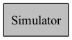
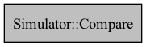

Simulator
-
class Simulator
Collaboration diagram for Simulator:
This class implements a discrete event simulator. The simulator maintains a priority queue of events, and run through the events, simulate each one until the queue is empty.
Public Functions
-
void run()
Run the simulation until no more events is in the queue. For each event in the queue (in increasing order of time), print out its string representation, then simulate it. If the simulation returns one or more events, add them to the queue, and repeat.
Public Static Functions
-
static Simulator factory(const Simulation &simulation)
The factory method for a simulator. It takes in a simulation as an argument, and calls the getInitialEvents method of that simulation to initialize the event queue.
- Parameters:
simulation – The simulation to simulate.
- Returns:
A Simulator.
Private Functions
Private Members
-
class Compare
Collaboration diagram for Simulator::Compare:
Public Functions
-
void run()